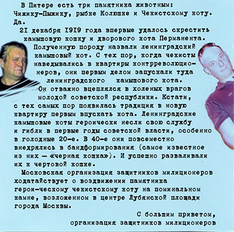
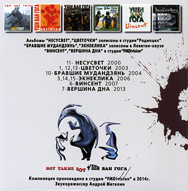

- 
-

- 
В ЗАПИСИ ПЕСЕН ПРИНИМАЛИ УЧАСТИЕ:
Сергей Капранов, Сергей Ситников, Илья Гришунин, Игорь Бычков,
Инна Капранова, Вова Весёлкин, Роман Федотов, Сергей Гоппен,
Игорь Беридзе, Сергей Васильев, Виталий Левитан, Олег Кулешов,
Илья Колосков, Александр (Тигр) Лучков, Вера Ситникова, Евгений Аммондт,
Андрей Романов, Слава Александров, Андрей Опарин, Юрий Караманенко,
Сергей Савин, Сергей Наумкин, Сергей, Николай и Евгения Иншаковы,
Алексей Яковлев, Алексей Ребров, Андрей Метелин
В ЗАПИСИ УЧАСТВОВАЛИ ИНСТРУМЕНТЫ:
гитары, клавиши, басы, скрипки,корнеты, губные гармошки,
мандолины, гайды, ирландские волынки, ирландские свирели,
саксы, ударные, компьютеры, голоса и др.
Альбомы «НЕСУСВЕТ», «ЦВЕТОЧКИ» записаны в
студии «Радиоцех»
«БРАВШИЕ МУДАНДЗЯНЬ», «ЭКНЕКЛИКА» записаны в Левитан-хаузе
«ВИНСЕНТ», «ЧИСТАЯ ГРЯЗЬ», «ВЕРШИНА ДНА» - в
студии «FMDivision»
11 - НЕСУСВЕТ 2000
1, 12, 13 - ЦВЕТОЧКИ 2003
10 - БРАВШИЕ МУДАНДЗЯНЬ 2004
3, 14, 15 - ЭКНЕКЛИКА 2006
6 - ВИНСЕНТ 2007
7 - ВЕРШИНА ДНА 2013